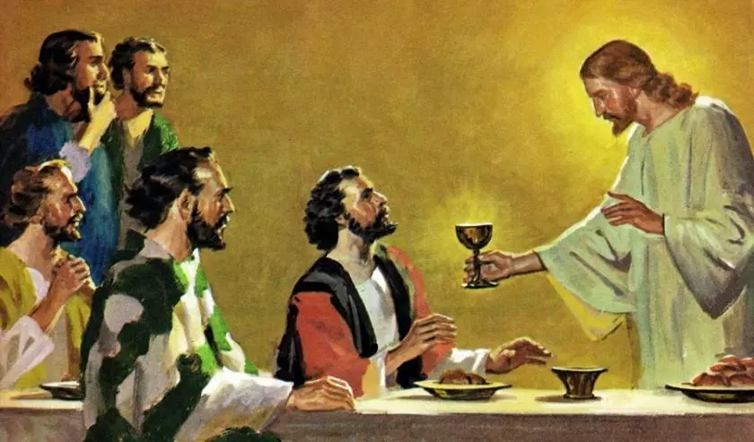

How Did Jesus Turn Water Into Wine?
March 2, 2018

VATICAN CITY- Over the past few centuries Jesus Christ’s miracles have become common knowledge worldwide. From walking on water to feeding the impoverished it seems like this deity could do it all! But one miracle stands out above the rest, that's right; Jesus turning water into wine!
How exactly did Jesus accomplish this? Well, Vatican cleric’s have shed some light unto this mysterious magic. Father Peter Pezzelli explains “ Jesus would consume up to 10 gallons of water over the course of an evening, after given twenty or so minutes to digest, he would consume a bushel of grapes. After letting the grape and water concoction ferment in his stomach for a fortnight, one of his apostles would gently pinch the ends of his nipples allowing the wine to spurt out of his ariola.” Pezzelli shaking his head admits “For lack of a better term, Jesus would lactate wine.”